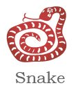
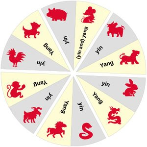
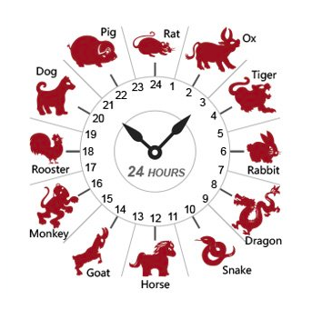

Chinese Zodiac
The Chinese animal zodiac, or shengxiao (/shnng-sshyaoww/ ‘born resembling’), is a repeating cycle of 12 years, with each year being represented by an animal and its reputed attributes. Traditionally these zodiac animals were used to date the years.
In order, the 12 animals are: Rat, Ox, Tiger, Rabbit, Dragon, Snake, Horse, Goat, Monkey, Rooster, Dog, Pig. Each year is associated with a zodiac animal.
The 12 Animals of the Chinese Zodiac
- 
It’s BAD LUCK When Your Zodiac Year Comes Around!
As the Chinese zodiac recurs every 12 years, your animal year will come around when you are 12, 24, 36, 48, 60, 72, etc.
According to ancient Chinese superstition, in your birth sign year, he will offend the God of Age, and will have bad luck during that year. The best way to avoid bad luck during this year is by wearing something red given by an elder (relative), such as socks, a neck cord, underwear, a waistband, a bracelet, or an anklet.
Chinese Zodiac Origins — Why 12 Animals
The 12 animals were chosen deliberately, after many revisions. The zodiac animals are either closely related to ancient Chinese people’s daily lives, or have lucky meanings.
The ox, horse, goat, rooster, pig, and dog are six of the main domestic animals raised by Chinese people. The other six animals: rat, tiger, rabbit, dragon, snake, and monkey are all loved by the Chinese people.
Why the 12 Zodiac Animals Are in That Order
The 12 Chinese Zodiac animals are in a fixed order according to Chinese Yin and Yang Theory and perceived attributes.
The yin or the yang of the animals is defined based on the odd or even number of their claws (or toes, hoofs). The animals are then arranged in an alternating (complementary) yin-yang sequence.
Usually an animal has is the same number of claws on its front and rear legs. However the rat has four toes on its fore legs and five on its hind legs.
As the old saying goes, “a thing is valued in proportion to its rarity”, so the Rat ranks first of the 12 zodiac animals. It uniquely combines the attributes of odd (yang) and even (yin). 4+5=9, and yang is dominant, so the Rat is classified as odd (yang) overall.

The 12 Chinese Zodiac Hours
It is widely known that each year is associated with a Chinese zodiac animal, but in Chinese culture the 12 zodiac animals are also associated with hours of a day.
In ancient times, in order to tell the time, people divided a day into twelve 2-hour periods, and designated an animal to represent each period, according to each animal’s “special time”.
According to Chinese astrology, though not popularly used, a person’s personality and life is more decided by his/her birth hour than year. The zodiac hour is widely used for character and destiny analysis.
